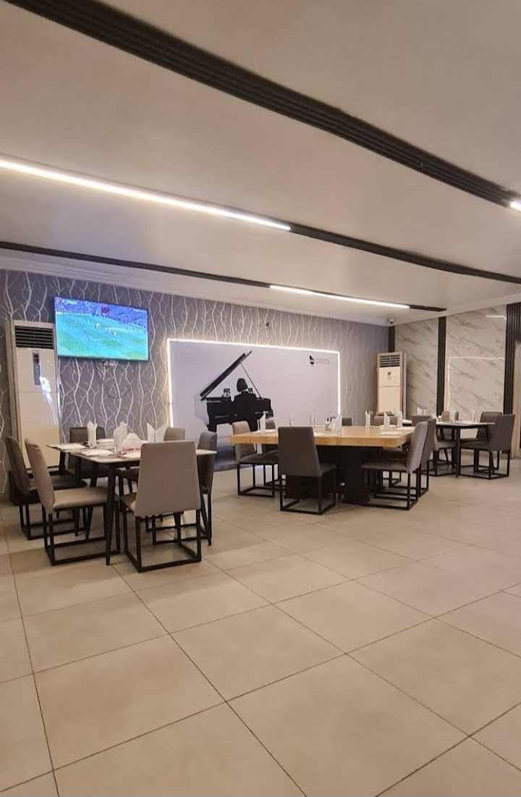
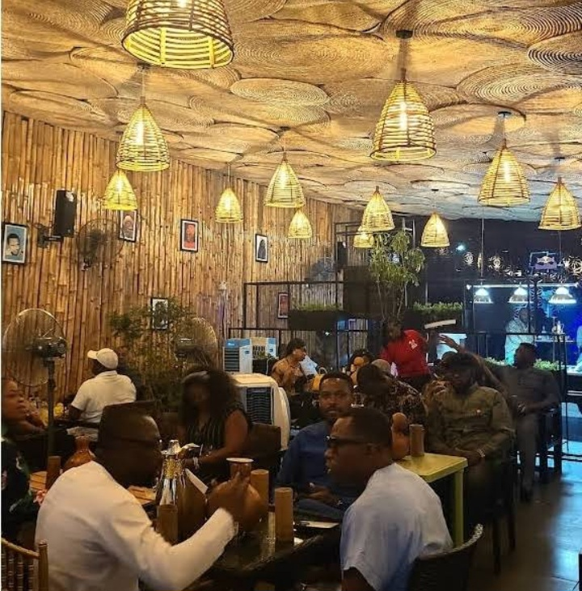

Tradition.
Taste. Culture.
A distinctive Port Harcourt dining experience bringing traditional Nigerian flavours, fresh palm wine, and good company together in one place.
Rooted In
Tradition.
A distinctive Port Harcourt restaurant and lounge built around traditional flavours, cultural character, and good company.

Where traditional Nigerian flavours meet a relaxed lounge experience.
OBIRI brings the richness of traditional and ethnic Nigerian cuisine to Port Harcourt, creating a dining experience centred around authentic flavours, fresh ingredients, and cultural character.
From local favourites and native soups to fresh palm wine and cocktails, OBIRI offers a place to eat, unwind, enjoy music, and spend time with good company.
Traditional Flavours
Nigerian dishes inspired by traditional recipes, local ingredients, and the richness of African cuisine.
Cultural Experience
A distinctive setting shaped by traditional significance, handcrafted furnishings, and African character.
Good Times
Good food, palm wine, cocktails, soft music, and a relaxed atmosphere for dining and unwinding.
Come Find Us.
New GRA, Port Harcourt.
111 Woji Road, New GRA, Port Harcourt 500101, Rivers.
Get DirectionsLet's talk.
Planning a visit, asking about the menu, or looking to enjoy an evening at OBIRI? Get in touch with us.
0904 042 9332